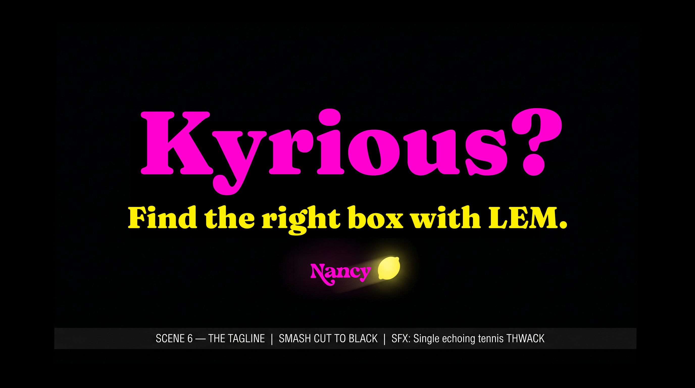
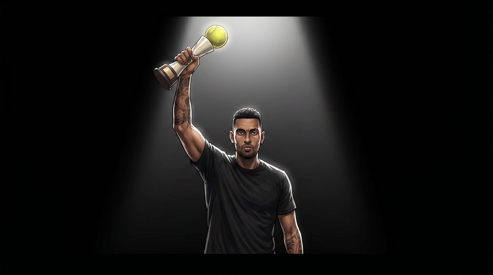
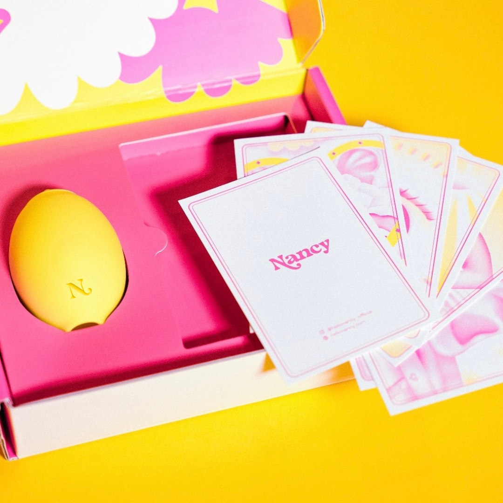
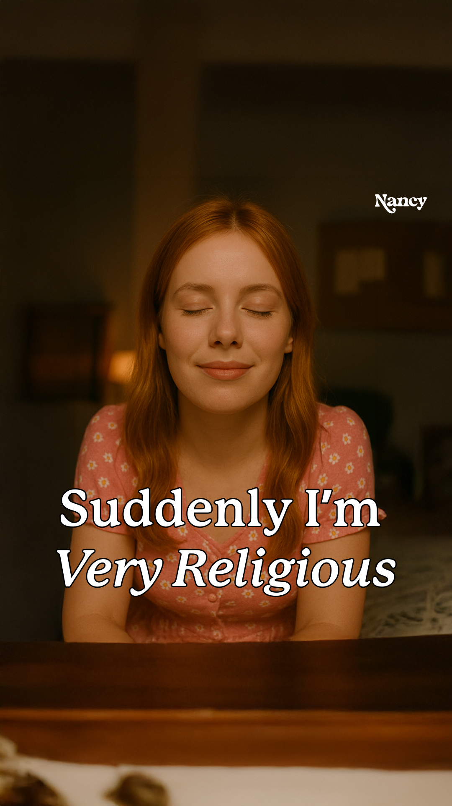

You hate a lemon. You launch your own. You win.
Nick publicly hates a HelloNancy product. He "retaliates" by launching his own — until Phase 2 reveals the whole feud was a Trojan horse and the new product is HelloNancy's all along. Nick isn't a spokesman. He's the opponent. Audiences don't share spokesperson ads — they share feuds.
Reference architecture: CeraVe × Michael Cera (Super Bowl 2024) — 32B earned impressions, 32× goal, +25% sales lift.
Nick Kyrgios hates a lemon.
Cinematic mockumentary, Drive-to-Survive tone. 6 scenes: meditation room → CCTV smash → confessional → manic phone call → confessional reprise → title card. Tagline: Find the right box with LEM. Kyrious?



Nick strikes back. The Kyrious Ball.
Over-the-top American infomercial. 6 scenes: pleasure lab → focus group → doctor → chalkboard breakthrough → engineering → packaging → declaration → title card. Tagline: Bye little lemon. You're served.



Day -5 — the plant.
A tennis content creator catches Nick "in the wild" — breaking a lemon, smashing a racket. "is nick OK??" No brand. No logo. No CTA. Looks organic. Question first, brand last (Cera architecture).
- Anonymous tennis-insider account (max deniability)
- Mid-tier tennis creator (Tennis Letter / Tennis TV-style)
- Friend on tour (Tiafoe / Sock — needs their own deal)
15 questions. 3 escalating parts.
Part 1 (Pokémon, Kevin Garnett, sushi) → Part 2 (the brand bridge) → Part 3 (the lemon performance). Designed as springboards — Nick's best moments are unscripted.
The product the campaign builds on.
Lem by HelloNancy — the lemon-shaped clitoral massager that breaks Nick's zen. The tennis-ball-headed Kyrious Ball is its in-universe counter-product (and, in the reveal, its sibling SKU).



Existing tone reference
Existing HelloNancy evergreen V1 — for tone-of-voice reference, not direct reuse.
Open questions to resolve before production.
- Day-1 seeding: which creator breaks the news?
- Phase 2 product reality: is Kyrious Ball a real SKU we ship, or film-only?
- Shoot window: Mallorca (Jun 18–21) primary, Stuttgart (Jun 5–7) hedge — confirm crew + Nick's availability
- Doctor scene tone: rewrite to keep the joke without women-as-target subtext
- OOH: NYC + London approved? Melbourne for home-court resonance?
- Paid vs. organic split: CeraVe was almost entirely earned
- Wimbledon-area activations: All England Club is aggressive on unsanctioned proximity — confirm permit zones